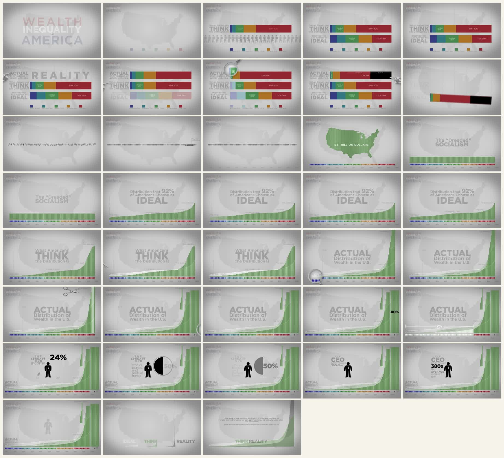
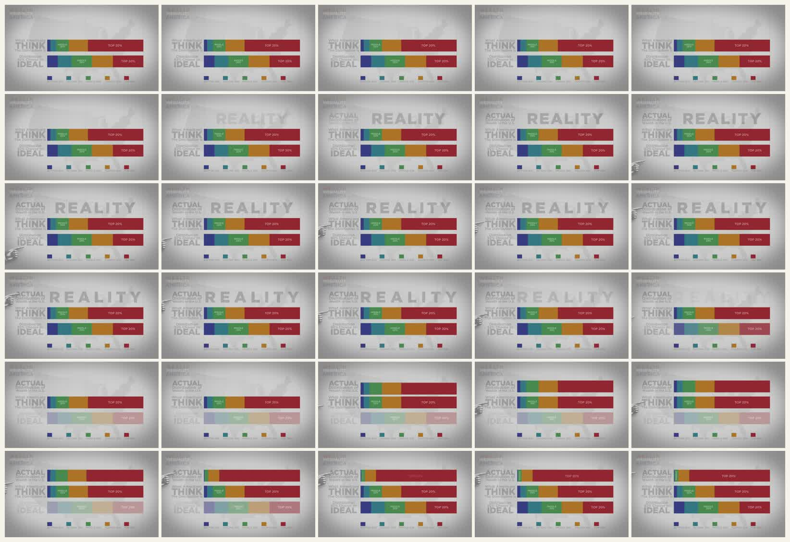
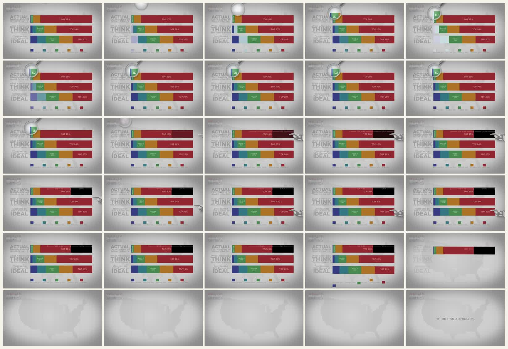
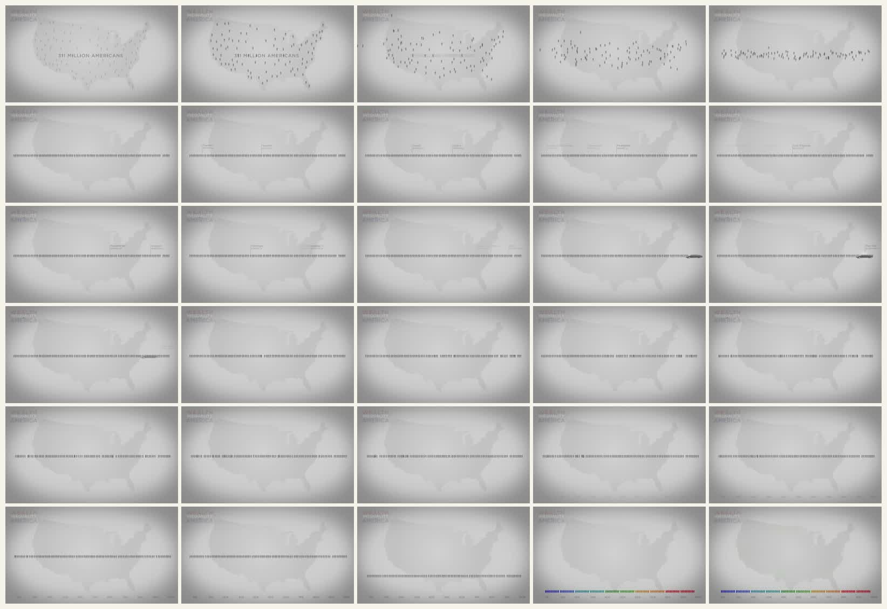
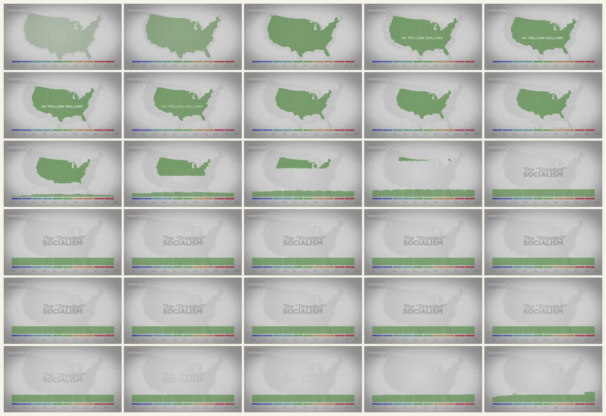
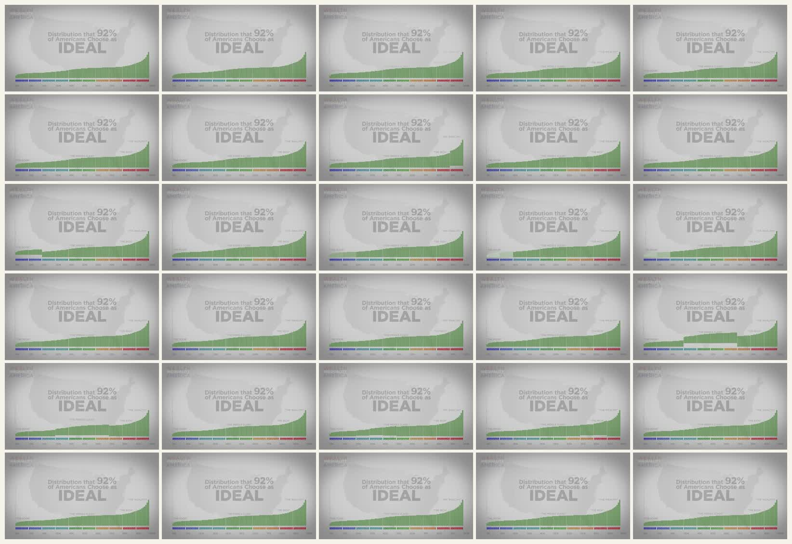
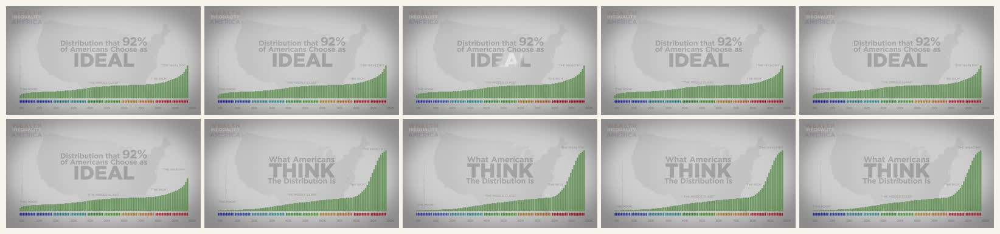

Wealth Inequality in America 拉片
这是一个更准确的参考样本：faceless、presentation-style、数据图表驱动，主要靠数字、标签、比例尺和图表变形完成解释。它不是 HBR Blue Ocean 那种白板/MG 隐喻片。
原片
为什么这次选它
它符合我们要找的方向
全片没有主持人，也几乎不靠角色表演。核心画面是标题、图例、堆叠条形图、人数图标、巨大分布图和数字标注。这就是很典型的“像演示文稿，但用运动把论证展开”的 explainer。
它比 HBR Blue Ocean 更贴近目标
HBR Blue Ocean 更偏白板图解和 MG 隐喻；这个片子则把“图表”本身当叙事主角。它的运动不是装饰，而是在做比较、揭示比例、改变尺度。
风格判定
Faceless非常强。没有真人出镜，画面完全由信息图和标签构成。
Animated Presentation非常强。每个段落都像一页幻灯片，但页面元素会持续重排和变形。
Kinetic Typography中等偏强。文字不是唯一主角，但标题、标签、百分比和词组承担节奏。
Whiteboard很弱。没有手绘推演，也没有白板演讲感。
HyperFrames 难度中等。主要是 SVG 图表、文字、缩放和遮罩，资产压力小。
全片粗拉片

| 0:00-0:40 | 建立题目和图例。标题、美国地图、五个财富阶层颜色块出现。画面像 presentation title slide，但有轻微镜头推进和元素淡入。 |
|---|---|
| 0:40-1:30 | 建立“以为”和“理想”。What Americans THINK 与 IDEAL 两条堆叠条出现，颜色和标签保持一致，观众先学会读图规则。 |
| 1:30-2:20 | 现实开始冲击。ACTUAL/REALITY 加入后，顶层财富段突然拉长，黑色区块和手部/剪刀式动作强化“比例超出预期”。 |
| 2:20-3:30 | 从条形图变成分布图。财富总量、美国地图、底部人群图标和分布曲线合并成一个更大的统计画面。 |
| 3:30-5:10 | 现实曲线被放大。绿色财富柱在右侧变得极高，画面用尺度差制造“看不下全貌”的震撼。 |
| 5:10-6:23 | 用人物图标和数字收束。CEO/普通工人、百分比、分布标签回到可理解的局部比较，最后把 THINK / REALITY 的差距留下。 |
细拉片：0:40-3:20
我选这一段细拉，是因为它完整展示了这个风格最值得学的东西：先建立图表语法，再让同一套语法变形，最后用尺度变化制造认知冲击。






可学的制作方法
| 核心不是“动很多” | 它一直复用同一批视觉元素：颜色块、标签、条形图、人群图标、地图。变化来自重新排列和重新标定尺度。 |
|---|---|
| 每个运动都服务理解 | 条形图横向生长，是为了让比例可见；曲线变高，是为了让差距可见；标签跟随数据，是为了降低读图成本。 |
| Presentation-like 但不是 PPT | PPT 常常是一页一页换；这里是一套图表系统在连续变形。观众感觉不是翻页，而是在看一个论证逐步展开。 |
| 适合 HyperFrames | 大部分画面可以用 HTML/SVG/CSS/GSAP 做：堆叠条、数字标签、曲线、遮罩、缩放、图例和字幕。真正难的是信息设计，不是资产制作。 |
对我们找案例的修正
如果目标是 “faceless explainer + animated presentation + typography”，不要优先找白板动画，也不要优先找角色 MG。应该找这种：画面像信息图/幻灯片，但运动承担论证，数字和标签承担节奏。